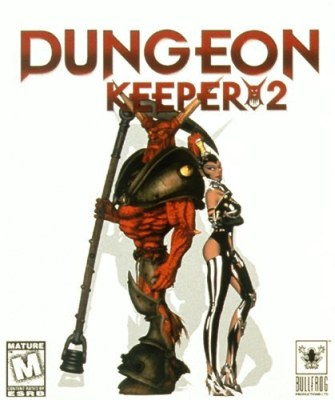

Dungeon Keeper 2 is an IBM PC strategy game developed by Bullfrog Productions and published by Electronic Arts in 1999 for Microsoft Windows. It was released in North America in June 1999 and in Europe over a year later in September 2000. It was the sequel to Peter Molyneux's Dungeon Keeper and predecessor to the cancelled Dungeon Keeper 3. Like its predecessor, players take the role of a dungeon keeper, building and defending an underground dungeon from the would-be heroes that invade it, as well as from other keepers. In the game's campaign mode, the player is charged with recovering the portal gems from each area in order to open a portal to the surface. This was charged as a setup for the sequel, where the gems would be used to invade the surface world and defeat the faction of goodly heroes.
Fascinating in the game, we decided to re-model Horny, the main character for our tutored project in the 2nd years of the University Institute of Technology (Nice, France).
Nice, February 2005